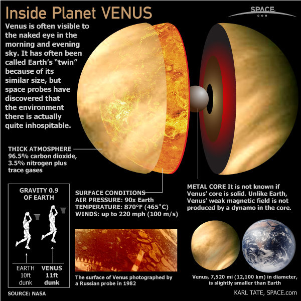

Vénus est une des quatre planètes telluriques du Système solaire. Elle est la deuxième planète par ordre d'éloignement au Soleil, et la sixième par masse ou par taille décroissantes.
La planète Vénus a été baptisée du nom de la déesse Vénus de la mythologie romaine.
La distance de Vénus au Soleil est comprise entre 0,718 et 0,728 UA, avec une période orbitale de 224,7 jours. Vénus est une planète tellurique,
comme le sont également Mercure, la Terre et Mars. Elle possède un champ magnétique très faible et n'a aucun satellite naturel. Elle est, avec Uranus,
l'une des deux seules planètes du Système solaire dont la rotation est rétrograde, et la seule ayant une période de rotation (243 jours) supérieure à
sa période de révolution. Vénus présente en outre la particularité d'être quasiment sphérique — son aplatissement peut être considéré comme nul — et
de parcourir l'orbite la plus circulaire des planètes du Système solaire, avec une excentricité orbitale de 0,0068 (contre 0,0167 pour la Terre).
Vénus est presque aussi grande que la Terre — son diamètre représente 95 % de celui de notre planète — et a une masse équivalente aux quatre cinquièmes
de celle de la Terre. Sa surface est dissimulée sous d'épaisses couches de nuages très réfléchissants qui lui confèrent un albédo de Bond de 0,75 et une magnitude
apparente dans le ciel pouvant atteindre -4,6, valeur dépassée uniquement par la Lune et le Soleil. Étant plus proche du Soleil que la Terre, elle présente des phases au même
titre que la Lune et Mercure selon sa position relative par rapport au Soleil et à la Terre, son élongation ne dépassant jamais 47,8°.

Vénus, l'étoile du Berger
Lorsque Vénus est visible, elle apparaît toujours la première dans le ciel du soir et disparaît la dernière dans le ciel du matin. C’est l’astre
le plus brillant du ciel, après le Soleil et la Lune. Cette particularité la rendait utile aux bergers, car ils pouvaient s’orienter en la voyant :
le soir, elle se trouve toujours dans la direction ouest ; le matin, toujours vers l’est.
Néanmoins, les bergers étaient habitués à la vie en pleine nature et possédaient d’autres méthodes pour s’orienter. Une autre hypothèse est donc que
l’expression « étoile du Berger » vienne plutôt de l'affection des bergers pour cet astre à force de le retrouver tous les matins ou tous les soirs.
Les citadins et les fermiers, pris par leurs occupations, ne regardaient pas Vénus aussi souvent.
Caractéristiques physiques
Vénus est souvent décrite comme une « sœur jumelle » de la Terre en raison de ses caractéristiques globales très proches de celles de notre planète :
son diamètre vaut 95 % de celui de la Terre, et sa masse un peu plus de 80 %. Néanmoins, si sa géologie est sans doute proche de celle de la Terre
, les conditions qui règnent à sa surface diffèrent radicalement des conditions terrestres. Vénus est notamment la planète la plus chaude du Système solaire.
Les phénomènes géologiques affectant la croûte vénusienne semblent également spécifiques à cette planète.
Atmosphère
L'atmosphère de Vénus est extrêmement dense. Elle se compose majoritairement de dioxyde de carbone (CO2) et d'une faible quantité d'azote. Cette atmosphère
est occupée par d'épais nuages de dioxyde de soufre6. Ce mélange crée le plus fort effet de serre du Système solaire, permettant d'atteindre des températures
de surface tournant autour des 460 °C7. La température de surface de Vénus est supérieure à celle de Mercure (420 °C), bien que Vénus se situe à près de deux
fois la distance Mercure-Soleil et ne reçoive donc qu'environ 25 % de l'irradiance solaire de Mercure.
Il n'y a que très peu d'ozone présent dans l'atmosphère vénusienne et donc aucune stratosphère.
L’atmosphère vénusienne peut se diviser sommairement en trois parties : la basse atmosphère, la couche nuageuse et la haute atmosphère.
Couche nuageuse
Il y a plusieurs couches de nuages situées entre 45 km et 70 km 8,10. Cette couche nuageuse opaque réfléchit la lumière solaire, ce qui explique la
brillance de Vénus et empêche d'observer directement le sol vénusien depuis la Terre. La couche nuageuse, présente notamment du dioxyde de soufre et de l’eau
(à l’état solide comme gazeux) ainsi que de l’acide sulfurique sous forme de gouttelettes. Le dioxyde de carbone y domine toujours.
Cette couche se subdivise en trois sous-couches :
La couche inférieure ou basse atmosphère, de 31 à 51 km. De 31 à 48 km d’altitude, l’atmosphère est qualifiée de brumeuse à cause de la faible
quantité de particules d’acide sulfurique qu’elle contient. Ces nuages d'acide sulfurique sont visibles depuis le sol comme des rubans de vapeur jaunis par le soufre qu'ils contiennent ;
La couche centrale ou principale de 51 à 52 km d’altitude, relativement claire ;
La couche supérieure ou haute de 52 à 68 km d’altitude. De 52 à 58 km d’altitude, elle consiste notamment en des gouttelettes d’acide sulfurique et d'acide chlorhydrique ainsi que
des particules de soufre (liquides comme solides). Les gouttelettes d'acide sulfurique sont en solution aqueuse, constituées à 75 % d'acide sulfurique et à 25 % d'eau. Enfin,
la plus haute partie de la couche supérieure, de 58 à 68 km d’altitude, consisterait en une brume de cristaux de glace. Ce sont ces cristaux qui donnent à Vénus son apparence
« laiteuse » vue depuis la Terre.
Croûte
La croûte silicatée, de 20 km d'épaisseur environ, serait plus épaisse que la croûte océanique terrestre (moyenne de 6 km), mais plus fine que la croûte continentale terrestre
(moyenne de 30 km). La taille de la croûte vénusienne a été déduite des nombreux épanchements de lave constatés autour des cratères d'impact. Cette croûte ne représenterait
que 0,34 % du rayon de la planète et les analyses faites par les différentes sondes Venera ont prouvé que le matériau extérieur de Vénus est semblable au granite et au basalte
terrestre (roches riche en silice et ferromagnésiennes). Le système de plaques continentales y serait moins complexe que sur Terre : les roches plus plastiques absorbent
fortement les effets de la dérive des continents. Ainsi, Vénus n'a pas de plaques tectoniques comme celles de la Terre.
Cette différence fondamentale entre la géologie des deux planètes telluriques les plus ressemblantes, peut être attribuée à leur évolution climatique divergente.
En effet, le climat vénusien empêche l'eau de se conserver à la surface, desséchant irréversiblement les roches de la croûte. Or l'eau interstitielle des roches
joue un grand rôle dans la subduction sur Terre, où elle est conservée dans ses océans. Les roches terrestres contiennent toutes un minimum d'eau résiduelle,
ce qui n'est pas le cas dans les conditions du climat à hautes températures de Vénus.
Analogie avec la Terre
Par sa taille et sa masse, Vénus est très similaire à la Terre et a souvent été décrite comme la
sœur jumelle de cette dernière33. Les deux planètes sont semblables, autant par des aspects physiques qu'orbitaux :
Elles sont nées à peu près en même temps, il y a 4,6 milliards d'années, dans le même nuage de gaz et de poussière ;
Vénus et la Terre sont toutes deux des planètes du Système solaire interne ;
Leurs surfaces montrent un terrain diversifié : montagnes, plaines, plateaux élevés, gorges, volcans, arêtes et cratères d'impact ;
Les deux ont peu de cratères, signe d'une surface relativement jeune et d'une atmosphère dense ;
Leurs compositions chimiques sont très proches.
Du fait de ces similitudes, des spécialistes ont longtemps pensé que, sous ses nuages denses, Vénus pourrait être très similaire
à la Terre et peut-être même abriter la vie. Des études proposent même qu'il y a quelques milliards d'années, Vénus ait été beaucoup
plus semblable à la Terre qu'elle ne l'est actuellement. En effet, il a été découvert qu'il y avait probablement des quantités importantes d'eau à sa surface.
Cette eau se serait évaporée à la suite d'un important effet de serre créant ainsi un niveau de gaz à effet de serre critique dans l'atmosphère.
Si vous voulez retourner en haut de la page, cliquez ici.